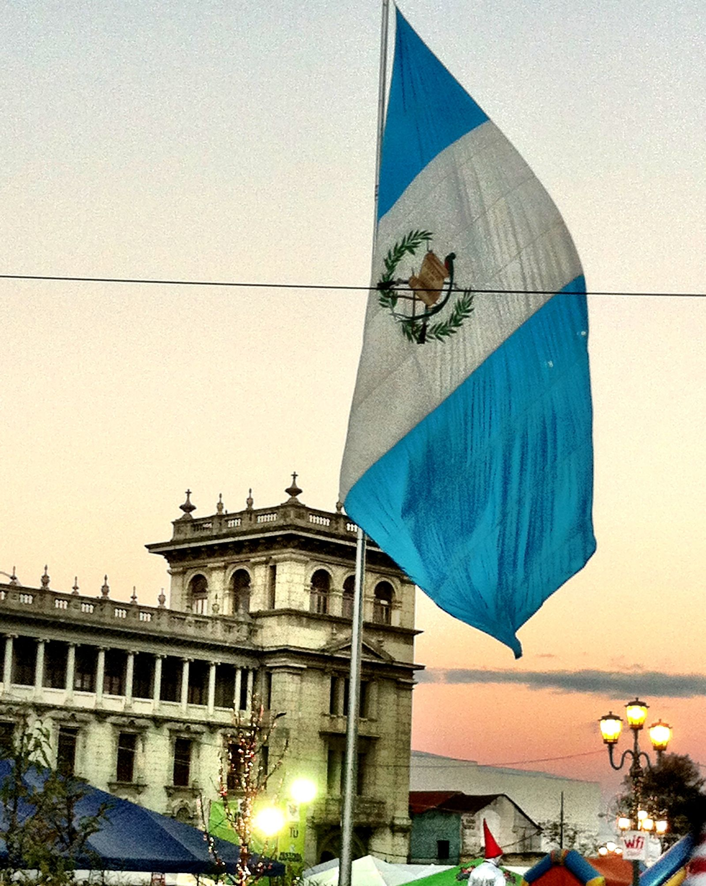
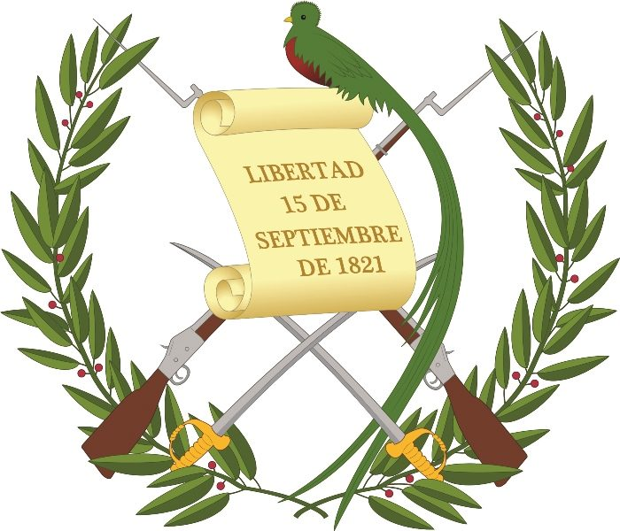
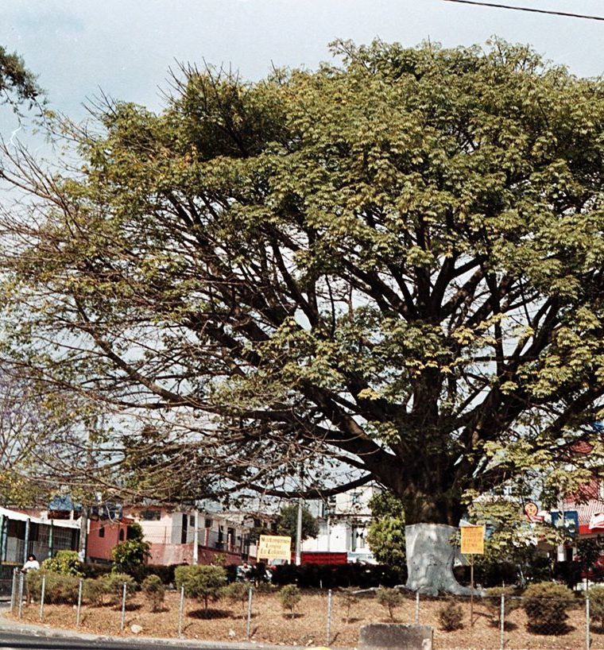

Bandera Nacional
La bandera es el más antiguo de los símbolos patrios, pero a lo largo del tiempo ha cambiado muchas veces en su forma, tamaño, color y escudo. En 1871, siendo presidente provisorio de la República el General Miguel García Granados, se decretó la creación de la Bandera y el Escudo Nacional de Guatemala que se usa en la actualidad.
Escudo Nacional
Este es el símbolo patrio con más elementos, cinco en total. Su versión actual data de 1871, autorizada durante el gobierno de Miguel García Granados. Diseñado por el suizo Juan Bautista Frener. Entre los elementos del escudo están los rifles, que aluden a la fuerza, mientras que las espadas a la justicia y soberanía.
Flor Nacional

La Monja Blanca fue declarada como Flor Nacional de Guatemala por decreto presidencial del General Jorge Ubico, el 11 de febrero de 1934.Se tomó la decisión de la elección de una flor nacional gracias a la sugerencia de Leticia M. Southerland, presidenta de la Exposición Internacional de Flores celebrada en Florida en 1933.
Arbol Nacional
La Ceiba Pentandra como iniciativa del botánico guatemalteco Ulises Rojas, fue reconocida como Árbol Nacional mediante acuerdo gubernativo del 8 de marzo de 1955. La iniciativa corrió a cargo Este árbol simboliza la vida, perpetuidad, grandeza y fuerza.
Ave Nacional

El Quetzal fue declaro como Ave Nacional en 1871 durante el gobierno de Miguel García Granados. Esta ave simboliza la libertad, autonomía e independencia, ya que este necesita ser libre para poder vivir. Esta ave ha sido parte de la cultura de los pueblos que habitaron en la época prehistórica.